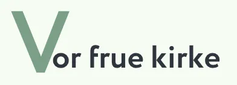
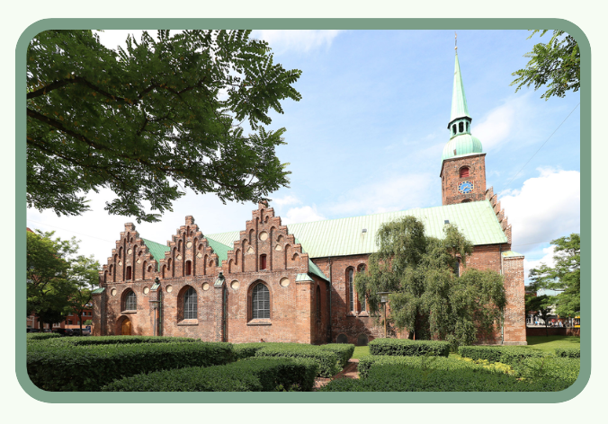
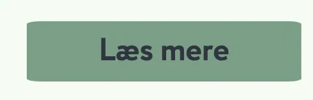
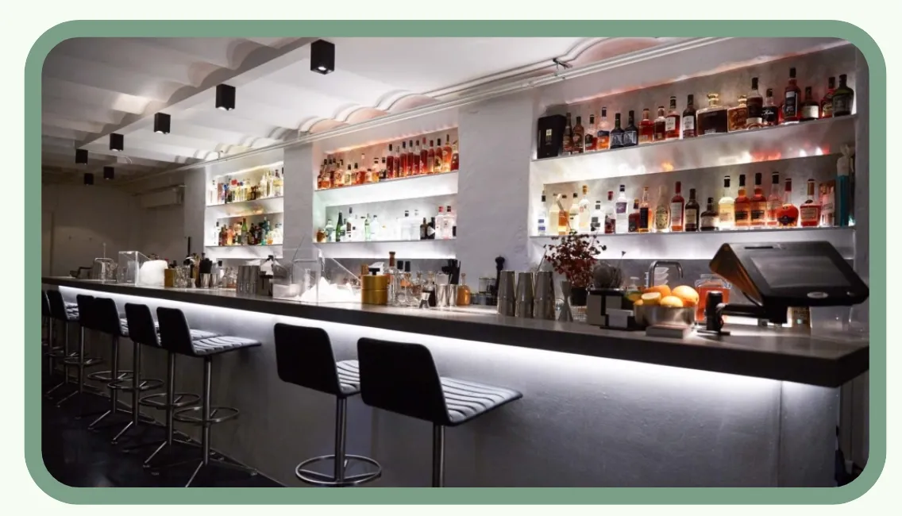

Åen i Aarhus blev brugt i middelalderen til at transportere handelsvare frem
og tilbage, fra havnen til oplandet. Da industrialiseringen kom,
blev åen også brugt til møller. Åen var en let måde at komme af med affald på
så blev den brugt som en skraldespand (ligesom nu hvor der ligger en masse cykler,
derfor man ikke må hoppe i åen og bade) I det 20. århundred blev en stor del af
åen dækket til og lavet til en vej, men i 1990’erne ubeskyttede de sig og
begyndte at genåbne åen. I 2005 blev åen færdig og er nu et af Aarhus’ central
områder, der finder du bland andet bar og caféer her.



Vor Frue kirke var faktisk et kloster helt til at begynde med, den var tilkoblet
domkirken som ligger meget tæt på. 200 år efter den blev bygget blev klosteret
lukket men kirken forblev. Der er ikke mindre end tre kirker der hvor den står,
kirken som vi kan se over jorden er fra middelalderen, en kryptkirke som går
helt tilbage til 1060 (som er en af Skandinaviens ældste bevarede), og så hovedkirken.

Gedulgt er en hemmelig bar i aarhus, faktisk så er ordet Gedulgt et gammelt
dansk ord der betyder ''skjult'' eller hemmeligt, og det er lige hvad baren er.
Den er skjult for det almindelige øje hvis du ikke ved hvor du skal lede.
Gedulgt er nemlig gemt i et skur i en baggård. Inde i er baren inspireret af
en retro stil hvor man kan få kreative cocktails. Dog er cocktails'ne ikke
SU-venlige med en prisleje mellem 100-150 kr. Men det er et besøg værd.